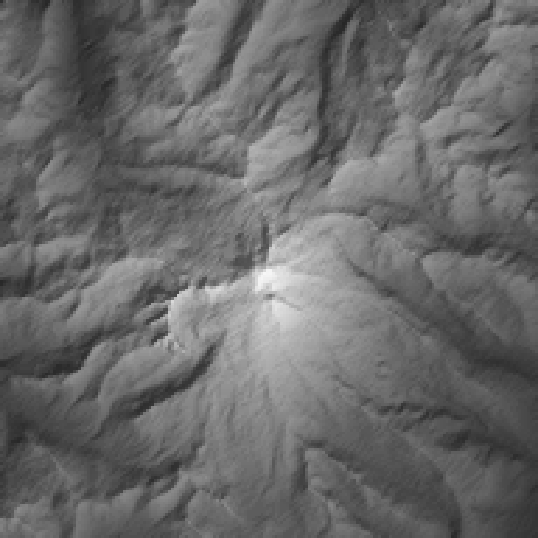
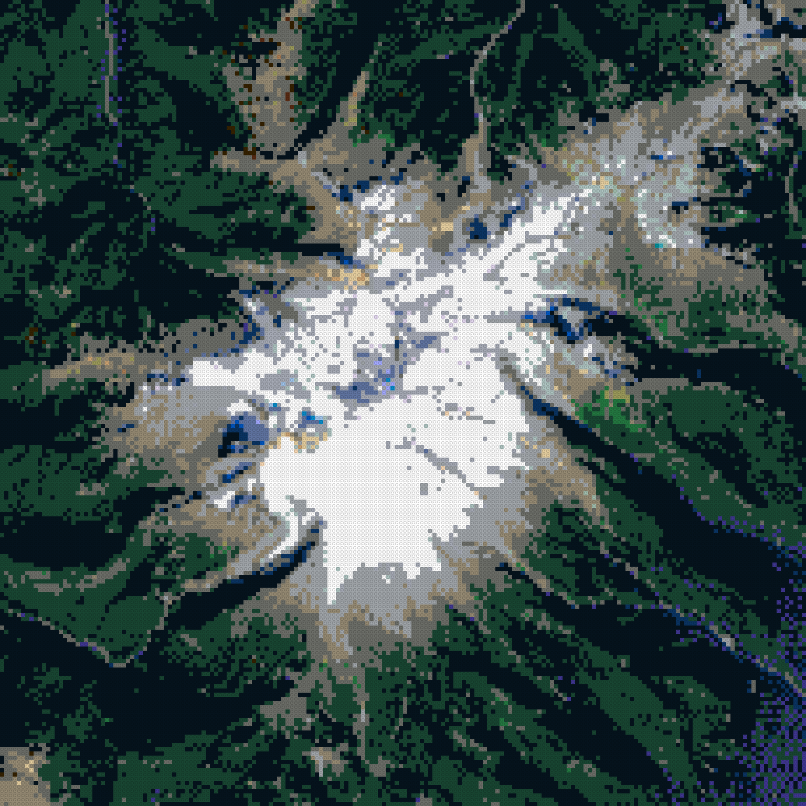
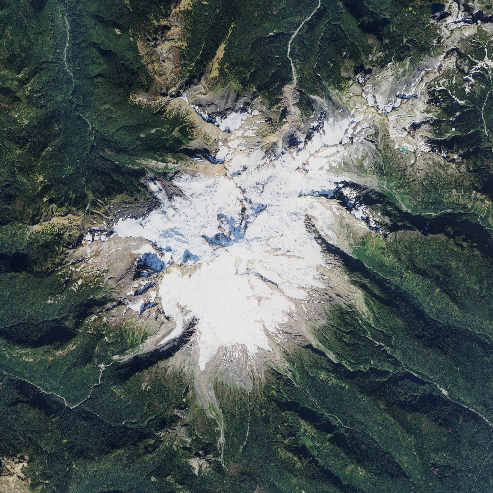

run mount-baker-20261001T161949 · generator 0.1.0+6c8eab4-dirty · catalog lego-1x1-2026-10-01 · status failed
· variant
max height 121 plates = 387.2 mm · open whole-mountain 3D view



| footprint | 1536.0 × 1536.0 mm (192 × 192 studs) |
|---|---|
| geographic area | 18.00 × 18.00 km, 93.75 m per stud, EPSG:26910 |
| datum | 251.5 m (raw DEM min 248.0 m) |
| summit | 3281.5 m stud-mean at stud [91, 96] (source max 3285.0 m) |
| relief above datum | 3030.0 m |
| meters per plate (1×) | 37.500 |
| max height x1.5 | 121 plates / 387.2 mm |
| LDraw 0 | 12087 studs |
| LDraw 288 | 9794 studs |
| LDraw 72 | 5054 studs |
| LDraw 15 | 3253 studs |
| LDraw 71 | 2341 studs |
| LDraw 28 | 1723 studs |
| LDraw 80 | 1019 studs |
| LDraw 272 | 392 studs |
| LDraw 85 | 328 studs |
| LDraw 323 | 241 studs |
| LDraw 379 | 219 studs |
| LDraw 2 | 108 studs |
| LDraw 19 | 78 studs |
| LDraw 308 | 61 studs |
| LDraw 330 | 38 studs |
| LDraw 31 | 32 studs |
| LDraw 378 | 29 studs |
| LDraw 1 | 14 studs |
| LDraw 78 | 13 studs |
| LDraw 371 | 10 studs |
| LDraw 431 | 8 studs |
| LDraw 70 | 6 studs |
| LDraw 321 | 6 studs |
| LDraw 212 | 5 studs |
| LDraw 84 | 3 studs |
| LDraw 3 | 1 studs |
| LDraw 322 | 1 studs |
| role | provider / dataset | date | license · attribution |
|---|---|---|---|
| elevation | USGS 3DEP 3DEPElevation (Bare Earth DEM Dynamic) | None | Public domain USGS 3D Elevation Program (3DEP) |
| imagery | USGS The National Map USGSNAIPPlus (NAIP, latest mosaic) | 2023-09-21 | Public domain USDA FSA NAIP via USGS The National Map |
| PASS | coverage_complete | non-finite DEM px: 0; non-finite imagery px: 0 |
| PASS | dem_imagery_aligned | 2 grids share bounds EPSG:26910; max extent mismatch 0.000 m |
| PASS | every_stud_has_elevation | 36864 studs |
| PASS | every_stud_has_allowed_color | all colors in catalog |
| PASS | no_terrain_below_datum | min plates per exaggeration: {'x1.5': 0} |
| PASS | quant_error_within_half_plate | max |error| plates: {'x1.5': 0.5} |
| PASS | catalog_colors_currently_produced | 27 colors used; not currently produced: [] |
| PASS | terrain_colors_plate_buildable | every used color is produced as a 1x1 plate |
| FAIL | summit_position | DEM max in stud (95, 96); highest stud (91, 96); offset 4 stud(s) |
| PASS | exaggeration_invariance | 1 exaggerations share footprint [(192, 192)] and one color array per color setting (colors are computed independently of exaggeration) |
| PASS | viewer_written | 1 whole-mountain 3D viewer(s) |
| PASS | ldraw_valid:x1.5_naip_average_diffusion0.10 | 116994 elements checked |
| PASS | ldraw_seams:x1.5_naip_average_diffusion0.10 | module files together equal the full model |
{
"schemaVersion": 1,
"runId": "mount-baker-20261001T161949",
"status": "failed",
"generatorVersion": "0.1.0+6c8eab4-dirty",
"createdAt": "2026-10-01T16:19:51+00:00",
"preset": {
"id": "mount-baker",
"name": "Mount Baker",
"center": {
"lat": 48.7768,
"lon": -121.8145
},
"boundingBox": {
"widthKm": 18,
"heightKm": 18
},
"targetStudWidth": 192,
"moduleStudSize": 64,
"surfaceResolutionStuds": 1,
"verticalExaggeration": 2,
"datumMode": "surrounding-minimum",
"viewpoints": [
{
"name": "Bellingham",
"bearingDeg": 266,
"elevationDeg": 8
},
{
"name": "Artist Point",
"bearingDeg": 49,
"elevationDeg": 20
},
{
"name": "Skagit Valley",
"bearingDeg": 170,
"elevationDeg": 10
}
]
},
"bounds": {
"crs": "EPSG:26910",
"minE": 578096.0,
"minN": 5394322.0,
"maxE": 596096.0,
"maxN": 5412322.0,
"metersPerStud": 93.75,
"studWidth": 192,
"studHeight": 192
},
"scale": {
"metersPerPlateTrueScale": 37.5,
"exaggerations": [
1.5
]
},
"datum": {
"mode": "surrounding-minimum",
"elevationM": 251.47645141601564,
"rawDemMinM": 248.0352325439453
},
"sources": [
{
"role": "elevation",
"provider": "USGS 3DEP",
"dataset": "3DEPElevation (Bare Earth DEM Dynamic)",
"sourceUrls": [
"https://elevation.nationalmap.gov/arcgis/rest/services/3DEPElevation/ImageServer/exportImage"
],
"itemIds": [],
"acquisitionDate": null,
"nativeResolutionM": 1.0,
"analysisGridPx": 1920,
"nativeCrs": "EPSG:26910",
"license": "Public domain",
"attribution": "USGS 3D Elevation Program (3DEP)",
"cacheKeys": [
"cce42acd2671a3f9dd2d94f07d812d09756259c28f66878cdd7b8426069eb726",
"d616a68bc5c5f32c43f41c0dc52ce178a6ea94990136205a693168179d66e6a2",
"9a121f7b225cde43229b85edf66f32931ab89ef3b1e16d1b57f3e39df8161b9d",
"c099b7fb7cf306c887ad4cd5cf814bfcddf5595d448e0e69653a64e3e1c164c3",
"ff9709b08d86067dd0bb6600f4c5c613136c747d91af54430d9f8d251135fb43",
"9d8f4742ac7838937f5ecebeb7f3c430560f48209fff96eacb548fe1700485f6",
"89c1465feb24bb776fcc6381db69034ffde06aa9b00879167f3577fb9cea45b9",
"b84fe241836c4cdebeb62aea949de29399d388993e9044af66cb4c4216249438",
"5d9f8e26037da03b9a23e48f727af97eec667dc06aff889cc7fa88e06b9de075",
"8620fea5b57090801edb52e5094cb5d034be847abdbe3d0e26284604c448dd02",
"02db9ff7751c1a34a500a01a1840db1884ac96d1bbb97f2ecc713f13eb1b78ad",
"229f8e6e3ecc34ea0ecdf8fef11fd53c1c5e7cec00cb1c696117adfc83aad113",
"9d42d13d83cfcd52a45fb7ad741da7560041fe17a231eca64bca1e4cbc52908b",
"9190ea906e09b663db0e4d16e0b3220aaedbe1dd6bc8a747eeb90789192dfeba",
"a1645e35f4422bec1b034a1d56997326ab9e4aeb06e553e17935273cf08b4352",
"101d49a57d1a872ce09d67336426df17d5788e0485a2b49b5175c61fabafb3e9"
]
},
{
"role": "imagery",
"provider": "USGS The National Map",
"dataset": "USGSNAIPPlus (NAIP, latest mosaic)",
"sourceUrls": [
"https://imagery.nationalmap.gov/arcgis/rest/services/USGSNAIPPlus/ImageServer/exportImage"
],
"itemIds": [
"wa_m_4812109_ne_10_060_20230915_20240209",
"wa_m_4812109_nw_10_060_20230915_20240209",
"wa_m_4812109_se_10_060_20230915_20240209",
"wa_m_4812109_sw_10_060_20230915_20240209",
"wa_m_4812110_ne_10_060_20230915_20240209",
"wa_m_4812110_nw_10_060_20230915_20240209",
"wa_m_4812110_se_10_060_20230915_20240103",
"wa_m_4812110_sw_10_060_20230915_20240103",
"wa_m_4812111_ne_10_060_20230921_20240209",
"wa_m_4812111_nw_10_060_20230921_20240209",
"wa_m_4812111_sw_10_060_20230921_20240209",
"wa_m_4812117_ne_10_060_20230915_20240209",
"wa_m_4812117_nw_10_060_20230915_20240209",
"wa_m_4812118_ne_10_060_20230915_20240103",
"wa_m_4812118_nw_10_060_20230915_20240103",
"wa_m_4812119_nw_10_060_20230921_20240209"
],
"acquisitionDate": "2023-09-21",
"nativeResolutionM": 0.6,
"analysisGridPx": 2880,
"nativeCrs": "EPSG:26910",
"license": "Public domain",
"attribution": "USDA FSA NAIP via USGS The National Map",
"cacheKeys": [
"32dfd12506401cd3e38b40caa3d50231719098c5669f85c31af4aabab24857c9",
"6cb718996482c4cfcdbeede9342f41648001e1c396c576e2e6ad7d6b74c92613",
"ab52948a6ff6e682a1c73fb42546e4b89aaddeec17a203841b44dc5e63350835",
"7ccd8bf61147b482c90d6b9ab8cb25b0052ed1d12e2dc375ba4ad090c2d0c009",
"8ffb265f2cfc544d10f621497668541a89522c67fe965d9aff779af5527903ac",
"2f24cfc6404d27b28b5531c4ebd5a3b2399e781ac1b8d13e8f260ee83ff859ba",
"fcb483a563b6ce30477d7388440dc143a94a6b9bffd2afde89de4de37a6759dd",
"836b70a91acb5e0f9fbe36bbd3aefe29d386cacc9f452dc7c086b37e09739d70",
"b0477022875eadda20c5afaca1a8f25dcf8c6a00a200b85b1b530ac1b5e751d3",
"0db026c37232c18cf250c6831cf8affce459d8a3aee6e0e0b35bdeb373c01aa4",
"06042f849edae1912c41492dbd062d1da47b83b36902f0a3821c2076265a59fd",
"be313aff052ebac21e76f852f82723fadd31f7dc317d5854778396b78384811b",
"becafc53cd7d2677f10424597328c5cb1f72a2175326ae670ab8824f3ee216a0",
"0096600b58f81625da18cace50d0b5a3bc2f825de45d1f7f67b23e00bb9b7e2c",
"022c99c252518f8fc8b27b6768aa7727ebdc907f7e3fd0b87f736e48ba9ef89f",
"96c8ac73b79220b5cfc191f9884d1840b8c0260f8b0774a32824931750b64d55"
],
"imageryKey": "naip",
"notes": [
"acquisition date cross-referenced from Planetary Computer NAIP STAC (16 items, 2023-09-15..2023-09-21)"
]
}
],
"catalog": {
"version": "lego-1x1-2026-10-01",
"sha256": "313a874bc2e3b9a52333454ffbe36a7d309261fd5b5deb0fcd496c8ef2922d2d",
"terrainPalette": {
"rule": "colors currently produced as 1x1 plate (3024)",
"size": 47,
"excluded": []
}
},
"variants": [
{
"key": "x1.5_naip_average_diffusion0.10",
"verticalExaggeration": 1.5,
"color": {
"imagerySource": "naip",
"imageryDate": null,
"sampling": "average",
"assignment": "diffusion",
"diffusionStrength": 0.1
},
"metrics": {
"maxHeightPlates": 121,
"maxHeightMm": 387.2,
"colorDistribution": {
"0": 12087,
"1": 14,
"2": 108,
"3": 1,
"15": 3253,
"19": 78,
"28": 1723,
"31": 32,
"70": 6,
"71": 2341,
"72": 5054,
"78": 13,
"80": 1019,
"84": 3,
"85": 328,
"212": 5,
"272": 392,
"288": 9794,
"308": 61,
"321": 6,
"322": 1,
"323": 241,
"330": 38,
"371": 10,
"378": 29,
"379": 219,
"431": 8
}
}
}
],
"summary": {
"geographicWidthM": 18000.0,
"geographicHeightM": 18000.0,
"physicalWidthMm": 1536.0,
"physicalDepthMm": 1536.0,
"summitStud": [
91,
96
],
"summitElevationM": 3281.4530712890623,
"summitSourceElevationM": 3284.984619140625,
"reliefM": 3029.9766198730467
},
"outputs": {
"canonical": {
"path": "canonical.npz",
"sha256": "99dd21a60391c33bd6c3d5c21d0df57f5170275980086a7146dc8b37a71af367"
},
"preview:height-x1.5": {
"path": "previews/height-x1.5.png",
"sha256": "fc170aa4017a288bccb6cca2c4b5db6c316327b0cf6a395778e0cc5fc2599596"
},
"preview:color-naip_average_diffusion0.10": {
"path": "previews/color-naip_average_diffusion0.10.png",
"sha256": "87e6e3700d513cc8b1ed460757c125bcd5bc9ae04328348ff6fd7baca2f24f10"
},
"preview:imagery-naip": {
"path": "previews/imagery-naip.png",
"sha256": "3304382f2b4ca029f89da2b3bba222b84df377876f16380c83e5c24c08a3cd23"
},
"viewer:x1.5_naip_average_diffusion0.10": {
"path": "viewer/x1.5_naip_average_diffusion0.10.html",
"sha256": "82ea0058248354eac1e9a98d399f9c9be0494f681536caf2e22ea31f79d7e0d0"
},
"ldraw:x1.5_naip_average_diffusion0.10:Module_A1": {
"path": "ldraw/x1.5_naip_average_diffusion0.10/Module_A1.ldr",
"sha256": "a7a51f53b7875f899eda68c0a8a042d32fd445ff43fac50480771b8aab1de790"
},
"ldraw:x1.5_naip_average_diffusion0.10:Module_A2": {
"path": "ldraw/x1.5_naip_average_diffusion0.10/Module_A2.ldr",
"sha256": "2c12def043b270bb161ed4c8d4b41c462e36d0eaed6b2238398d55146e1fe4e1"
},
"ldraw:x1.5_naip_average_diffusion0.10:Module_A3": {
"path": "ldraw/x1.5_naip_average_diffusion0.10/Module_A3.ldr",
"sha256": "5c0e12c92065685d8fd0bec8376a14e4b053786f272711bcda3ec745c0cdd37f"
},
"ldraw:x1.5_naip_average_diffusion0.10:Module_B1": {
"path": "ldraw/x1.5_naip_average_diffusion0.10/Module_B1.ldr",
"sha256": "83be064c90b846108b7de1d2fccfcd4285dbb0d6e7c3690dedaccce9ddb1f759"
},
"ldraw:x1.5_naip_average_diffusion0.10:Module_B2": {
"path": "ldraw/x1.5_naip_average_diffusion0.10/Module_B2.ldr",
"sha256": "27646e4c232f7d8d3c54dcbec1057a7fefc852c667fe0376ac1572bab7e58b41"
},
"ldraw:x1.5_naip_average_diffusion0.10:Module_B3": {
"path": "ldraw/x1.5_naip_average_diffusion0.10/Module_B3.ldr",
"sha256": "25825b7060737cab200bfc7cd11c38653282d09b035f0c44c98369ce794c5814"
},
"ldraw:x1.5_naip_average_diffusion0.10:Module_C1": {
"path": "ldraw/x1.5_naip_average_diffusion0.10/Module_C1.ldr",
"sha256": "40050fe6a3b498c976e43db98151117289cb74e1e9a4222820ca8d3112fe563e"
},
"ldraw:x1.5_naip_average_diffusion0.10:Module_C2": {
"path": "ldraw/x1.5_naip_average_diffusion0.10/Module_C2.ldr",
"sha256": "17d8967d093c28e0f162eedb700adb1bae85e6feb401555e062ca3dcd9358ac4"
},
"ldraw:x1.5_naip_average_diffusion0.10:Module_C3": {
"path": "ldraw/x1.5_naip_average_diffusion0.10/Module_C3.ldr",
"sha256": "3165b06b1fb67008f9c4330cd80f0e3fc832bb3c890a58ebfbd7dfeeea80c987"
},
"ldraw:x1.5_naip_average_diffusion0.10:full": {
"path": "ldraw/x1.5_naip_average_diffusion0.10/Mount_Baker.mpd",
"sha256": "abd05aed28e07f8689e086255db276aa0e719bc3dcd603a9717f15b9c610dfb2"
}
},
"validation": [
{
"check": "coverage_complete",
"passed": true,
"detail": "non-finite DEM px: 0; non-finite imagery px: 0"
},
{
"check": "dem_imagery_aligned",
"passed": true,
"detail": "2 grids share bounds EPSG:26910; max extent mismatch 0.000 m"
},
{
"check": "every_stud_has_elevation",
"passed": true,
"detail": "36864 studs"
},
{
"check": "every_stud_has_allowed_color",
"passed": true,
"detail": "all colors in catalog"
},
{
"check": "no_terrain_below_datum",
"passed": true,
"detail": "min plates per exaggeration: {'x1.5': 0}"
},
{
"check": "quant_error_within_half_plate",
"passed": true,
"detail": "max |error| plates: {'x1.5': 0.5}"
},
{
"check": "catalog_colors_currently_produced",
"passed": true,
"detail": "27 colors used; not currently produced: []"
},
{
"check": "terrain_colors_plate_buildable",
"passed": true,
"detail": "every used color is produced as a 1x1 plate"
},
{
"check": "summit_position",
"passed": false,
"detail": "DEM max in stud (95, 96); highest stud (91, 96); offset 4 stud(s)"
},
{
"check": "exaggeration_invariance",
"passed": true,
"detail": "1 exaggerations share footprint [(192, 192)] and one color array per color setting (colors are computed independently of exaggeration)"
},
{
"check": "viewer_written",
"passed": true,
"detail": "1 whole-mountain 3D viewer(s)"
},
{
"check": "ldraw_valid:x1.5_naip_average_diffusion0.10",
"passed": true,
"detail": "116994 elements checked"
},
{
"check": "ldraw_seams:x1.5_naip_average_diffusion0.10",
"passed": true,
"detail": "module files together equal the full model"
}
],
"exportMode": "both",
"ldrawCounts": {
"x1.5_naip_average_diffusion0.10": {
"Module_A1": 7312,
"Module_A2": 6580,
"Module_A3": 6807,
"Module_B1": 6637,
"Module_B2": 6057,
"Module_B3": 5909,
"Module_C1": 7140,
"Module_C2": 6260,
"Module_C3": 5795,
"Mount_Baker": 58497
}
}
}